Home › Items
Clothing and accessories Live
Career outfits, hats, gloves, shoes, bags and fashion items — where to get them, examples with icons
Clothing gives defense and stats (see Character stats) · equipping, removing and repairing is on Equipment and repair Early career outfits are made at a Workbench, the advanced Lv60 ones are sewn at a Tailoring Workbench · most fashion items are sold in the Shop — fashion packs (paid in Durango Coins) or random Express Cargo boxes (Fashion / Decorative Gear, 100 Warp Gems per box) · profession name tags come in 100-Durango-Coin packs · a few can be bought with Loyalty points at the Loyalty Shop
Special item stats really work Live
The stats written on an item (besides defense) and the item's attributes really apply while you wear it — they add to the stats window and the gauges on screen
| Item stat | Effect | Example |
|---|---|---|
| Max Health · Max Energy · Life recovery | Longer gauges, faster regeneration (Survival) | Ace Explorer Outfit Max Energy +10 to +15 depending on item level · some event items add Max Health |
| Evasion | A chance to dodge animal attacks by itself (Character stats) | Melee Combat Outfit +1 to +5 depending on item level |
| Heat/cold/wind … resistance | 3% less fatigue of that weather per point (up to 90%), and softer temperature changes (Weather) | Leaf Outfit (heat) · Thermal Resistance Gloves +10 to +12 · Winter Fur Gloves Lv60 Cold Resistance 4 |
| Volcanic Storm Immunity | No Precursor and no Volcanic Storm damage (Volcanic Storm) | Firefighter Outfit/Helmet |
| Movement speed | Walk faster (Weather) | Techwear / Techwear Hat +10% each |
| Stealth | Aggressive animals spot you from closer (Wild animals) | Ghillie Suit · Combative Search Outfit |
| Bag capacity | Carry more (Storage) | Bag-pocket modification/Storage Capacity attribute: level = slots · some event bags +20 |
| Acquired EXP | More character EXP (Skills) | A special event item +200% |
| Gathering fatigue reduction | Less tired from gathering (Gathering) | Gatherer Name Tag −50% |
- Stats that rise in steps with level use the item's level (an item below the first step gets the first step's value)
- Attribute levels on an item (resistance, defense, capacity …) = the item's design level + its latent attribute (Item attributes)
- An item at zero durability gives nothing at all — attributes, immunities and bag slots included — until repaired · stats update as soon as it breaks or is repaired (Equipment and repair)
- Crafting fatigue reduction (e.g. the Builder Name Tag) has no effect yet, because crafting on this server doesn't add fatigue in the first place
Item descriptions show level-based bonuses Live
Bonuses that rise in steps with item level (necklaces, carnation corsages, sunglasses, builder hats/outfits, etc.) now show as numbers in the item description · the number in the description = what you really get while wearing it (before 11 Oct 2026 the description left this line out, but the bonus already applied)
| Accessory | Item level | Bonus |
|---|---|---|
| Flower Necklace | 1–30 | Charisma +1 (Lv1–19) · +2 (Lv20–29) · +3 (Lv30) |
| Feather Necklace | 10–30 | Charisma +4 (Lv10–19) · +8 (Lv20–29) · +10 (Lv30) |
| Pearl Necklace | 30–50 | Charisma +12 (Lv30–39) · +15 (Lv40–49) · +18 (Lv50) |
| Dog Tag | 40–60 | Will +16 (Lv40–49) · +20 (Lv50–59) · +24 (Lv60) |
| Gem Necklace | 50–60 | Charisma +18 (Lv50–59) · +21 (Lv60) |
| Electrum Necklace | 50–60 | All Crafting Ability +2 (Lv50–59) · +3 (Lv60) |
| Brachio Tooth Necklace | 50–60 | Max Health +200 · Life recovery +0.5 (Lv50–59) · Max Health +260 · Life recovery +1 (Lv60) |
Coming: bonuses for the jeweller's glasses, goggles and magnifier (made from polished gems) and for gem luster — right now you can wear them but they give no bonus (Extracting and polishing gems)
Beginner outfits
Leaf, hide and first cloth outfits · 12 obtainable
| Name | Max level | Where from | |
|---|---|---|---|
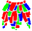 | Money Bouquet Outfit | 30 | Craft (hands) |
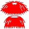 | Straw Outfit | 30 | Craft (hands) |
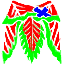 | Leaf Outfit | 30 | Craft (hands) |
| Bark Outfit | 30 | Craft (Workbench) | |
| Modified Technician Outfit | 35 | Craft (Workbench) | |
| Modified Homemaker Outfit | 35 | Craft (Workbench) | |
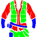 | Modified Suit | 35 | Craft (Workbench) |
| Bark Armor | 35 | Craft (Workbench) | |
| Modified Uniform | 35 | Craft (Workbench) | |
| Modified Activewear | 35 | Craft (Workbench) | |
| F/W Soryebok | 60 | Shop (Hanbok Decorative Gear Package 200 Durango Coins) | |
| Leather Outfit | 30 | Craft (Workbench) |
Explorer outfits
9 obtainable
| Name | Max level | Where from | |
|---|---|---|---|
| Flax Collection Outfit | 35 | Craft (Workbench) | |
| Lightweight Collection Outfit | 40 | Craft (Workbench) | |
| Loose Exploration Outfit | 45 | Craft (Workbench) | |
| Investigator Outfit | 55 | Craft (Workbench) | |
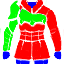 | Spiky Armor | 55 | Craft (Workbench) |
| Advanced Miner Outfit | 60 | Craft (Tailoring Workbench) | |
 | Volcanic Storm Miner Outfit (blocks the Volcanic Storm) | 60 | Craft (Tailoring Workbench) |
| Investigator Outfit II | 60 | Craft (Tailoring Workbench) | |
| Ace Explorer Outfit | 60 | Craft (Tailoring Workbench) |
Hunter outfits
13 obtainable
| Name | Max level | Where from | |
|---|---|---|---|
| Cold Protection Combat Outfit | 40 | Craft (Workbench) | |
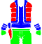 | Hunting Clothes | 45 | Craft (Workbench) |
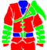 | Formal Bone Armor | 50 | Craft (Workbench) |
| Fur Shoulder Outfit | 55 | Craft (Workbench) | |
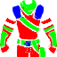 | Feathered Hunting Outfit | 55 | Craft (Workbench) |
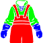 | Swamp Waders | 55 | Craft (Workbench) |
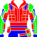 | Melee Combat Outfit II | 60 | Craft (Tailoring Workbench) |
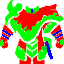 | Advanced Tracker Outfit | 60 | Craft (Tailoring Workbench) |
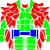 | Camo Sniper Outfit | 60 | Craft (Tailoring Workbench) |
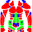 | Combative Search Outfit | 60 | Craft (Tailoring Workbench) |
| Executioner Outfit | 60 | Craft (Tailoring Workbench) | |
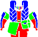 | Motorcycle Gear | 60 | Craft (Tailoring Workbench) |
Settler outfits
12 obtainable
| Name | Max level | Where from | |
|---|---|---|---|
| Casual Outfit | 30 | Craft (Workbench) | |
| Dignified Apron | 35 | Craft (Workbench) | |
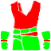 | Light Work Clothes | 40 | Craft (Workbench) |
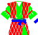 | Elegant Work Clothes | 50 | Craft (Workbench) |
| Work Clothes with Armband | 55 | Craft (Workbench) | |
| Flower Garden Dress | 55 | Craft (Workbench) | |
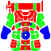 | Heavy Construction Suit | 60 | Craft (Tailoring Workbench) |
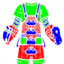 | Bone-Knuckle Construction Outfit | 60 | Craft (Tailoring Workbench) |
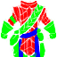 | Silent Farmer Outfit | 60 | Craft (Tailoring Workbench) |
| Work Clothes with Armband II | 60 | Craft (Tailoring Workbench) | |
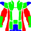 | Fashionable Work Clothes | 60 | Craft (Tailoring Workbench) |
| Avant-Garde Outfit | 60 | Craft (Tailoring Workbench) |
Hats
48 obtainable (career hats included)
| Name | Max level | Where from | |
|---|---|---|---|
| Straw Headband | 30 | Craft (hands) | |
| Straw Hat | 45 | Craft (Workbench) | |
| Feathered Hunting Hat | 55 | Craft (Workbench) | |
| Delivery Box | 60 | Shop (Box Hat Package 200 Durango Coins) | |
| Mask | 60 | Shop (random from Fashion Express Cargo 100 Warp Gems) | |
| Camo Sniper Mask | 60 | Craft (Tailoring Workbench) | |
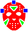 | Hockey Mask (Decorative) | 60 | Shop (random from Decorative Gear Express Cargo 100 Warp Gems) |
| Flame Helmet | 60 | Shop (random from Fashion Express Cargo 100 Warp Gems) | |
| Executioner Hood | 60 | Craft (Tailoring Workbench) | |
| Melee Combat Helmet | 60 | Craft (Tailoring Workbench) | |
| Fashionable Work Hat | 60 | Craft (Tailoring Workbench) | |
| Pontificating Philosopher Mask (Decorative) | 60 | Shop (random from Decorative Gear Express Cargo 100 Warp Gems) | |
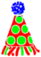 | Party Hat (Decorative) | 60 | Shop (random from Decorative Gear Express Cargo 100 Warp Gems) |
| Chicken Head Hat | 60 | Shop (random from Fashion Express Cargo 100 Warp Gems) | |
| Special Gathering Hat | 60 | Shop (Gatherer Package 100 Durango Coins) | |
| Safety Cone Hat | 60 | Shop (random from Fashion Express Cargo 100 Warp Gems) |
Gloves
17 obtainable
| Name | Max level | Where from | |
|---|---|---|---|
| Arm Warmers | 30 | Craft (hands) | |
| Leather Arm Warmers | 30 | Craft (hands) | |
| Fur Gloves | 45 | Craft (Workbench) | |
| Armored Gloves | 45 | Craft (Workbench) | |
| Bone Gloves | 60 | Craft (Tailoring Workbench) | |
| Winter Fur Gloves | 60 | Craft (Tailoring Workbench) | |
| Thermal Resistance Gloves | 60 | Craft (Tailoring Workbench) | |
| Leaf Arm Warmers | 30 | Craft (hands) | |
| Fur Arm Warmers | 30 | Craft (hands) | |
| Rubber Gloves | 60 | Season Pass | |
| Bone Plate Gloves | 60 | Craft (Tailoring Workbench) | |
| Fingerless Gloves | 35 | Craft (Workbench) |
Shoes
15 obtainable
| Name | Max level | Where from | |
|---|---|---|---|
| Footwraps | 30 | Craft (hands) | |
| Leaf Footwraps | 30 | Craft (hands) | |
| Wooden Shoes | 30 | Craft (Workbench) | |
| Fur Boots | 45 | Craft (Workbench) | |
| Armored Boots | 45 | Craft (Workbench) | |
| Ivory Boots | 60 | Craft (Tailoring Workbench) | |
| Bone Boots | 60 | Craft (Tailoring Workbench) | |
| Straw Shoes | 30 | Craft (hands) | |
| Rubber Boots | 60 | Season Pass | |
| Leather Sandals | 35 | Craft (Workbench) | |
| Moccasins | 40 | Craft (Workbench) | |
| Leather Boots | 45 | Craft (Workbench) |
Bags
10 obtainable
| Name | Max level | Where from | |
|---|---|---|---|
| Coconut Canteen | 30 | Craft (hands) | |
| Bamboo Canteen | 30 | Craft (hands) | |
| Fabric Bag | 30 | Craft (Workbench) | |
| Leaf Bag | 30 | Craft (hands) | |
| Small Bag | 35 | Craft (Workbench) | |
| Horn Canteen | 45 | Craft (Workbench) | |
| Secondary Bag | 45 | Craft (Workbench) | |
| Fabric Canteen | 55 | Craft (Workbench) | |
| Waterskin Canteen | 60 | Craft (Tailoring Workbench) | |
 | Backpack | 60 | Craft (Tailoring Workbench) |
| Bamboo Bag | — | Not obtainable yet | |
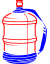 | Recycled Bag | — | Not obtainable yet |
Modern fashion Live
Fashion clothing and accessories, mostly from Shop fashion packs or random Express Cargo boxes · items that are Decorative Gear (costumes — many have «(Decorative)» in the name) only change your look, add no stats, and cover your armor only in the slot they occupy — see Decorative Gear · clothing 28 · accessories 39
| Name | Max level | Where from | |
|---|---|---|---|
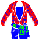 | Farmer Outfit | 60 | Shop (random from Fashion Express Cargo 100 Warp Gems) |
| Homemaker Outfit | 60 | Shop (random from Fashion Express Cargo 100 Warp Gems) | |
| Suit | 60 | Shop (random from Fashion Express Cargo 100 Warp Gems) | |
| Cargo Pants (Decorative) | 60 | Shop (random from Decorative Gear Express Cargo 100 Warp Gems) | |
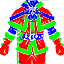 | Posh Santa Outfit | 60 | Shop (Santa Outfit Package 300 Durango Coins) |
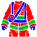 | Firefighter Outfit (blocks the Volcanic Storm) | 60 | Shop (random from Fashion Express Cargo 100 Warp Gems) |
| Full Body Tights | 60 | Shop (300 Loyalty, random from Fashion Express Cargo 100 Warp Gems) | |
| Engineer Outfit (Decorative) | 60 | Shop (random from Decorative Gear Express Cargo 100 Warp Gems) | |
| Ghillie Suit (Decorative) | 60 | Shop (random from Decorative Gear Express Cargo 100 Warp Gems) | |
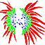 | Samba Festival Outfit | 60 | Shop (random from Fashion Express Cargo 100 Warp Gems) |
| Hot Spring Outfit | 60 | Shop (Hot Spring Package 300 Durango Coins) | |
| Chrome Tights | 60 | Shop (random from Decorative Gear Express Cargo 100 Warp Gems) | |
| Elephant Hat | 60 | Shop (1,200 Loyalty, random from Decorative Gear Express Cargo 100 Warp Gems) | |
| Police Uniform | 60 | Shop (random from Fashion Express Cargo 100 Warp Gems) | |
| Taekwondo Uniform (Decorative) | 60 | Shop (random from Decorative Gear Express Cargo 100 Warp Gems) | |
| Autumn Coat | 60 | Shop (Autumn Decorative Gear Package 200 Durango Coins, random from Special Express Cargo 50 Durango Coins) | |
| Techwear | 60 | Shop (Techwear Package 200 Durango Coins) |
| Name | Max level | Where from | |
|---|---|---|---|
| Cardboard Box | 60 | Shop (random from Fashion Express Cargo 100 Warp Gems) | |
| Delivery Box | 60 | Shop (Box Hat Package 200 Durango Coins) | |
| Builder Name Tag | 60 | Shop (Builder Package 100 Durango Coins) | |
| Keffiyeh (Decorative) | 60 | Shop (random from Decorative Gear Express Cargo 100 Warp Gems) | |
| Mask | 60 | Shop (random from Fashion Express Cargo 100 Warp Gems) | |
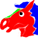 | Horse Mask | 60 | Shop (random from Fashion Express Cargo 100 Warp Gems) |
| Hockey Mask | 60 | Shop (random from Fashion Express Cargo 100 Warp Gems) | |
| Skull Hat | 60 | Shop (random from Fashion Express Cargo 100 Warp Gems) | |
| Safety Helmet | 60 | Shop (random from Fashion Express Cargo 100 Warp Gems) | |
| Posh Santa Hat | 60 | Shop (Santa Outfit Package 300 Durango Coins) | |
| Firefighter Helmet (blocks the Volcanic Storm) | 60 | Shop (random from Fashion Express Cargo 100 Warp Gems) | |
| Party Hat | 60 | Shop (random from Fashion Express Cargo 100 Warp Gems) | |
| Chicken Head Hat | 60 | Shop (random from Fashion Express Cargo 100 Warp Gems) | |
| Samba Festival Headpiece (Decorative) | 60 | Shop (random from Decorative Gear Express Cargo 100 Warp Gems) | |
| Lady Liberty Hat | 60 | Shop (Lady Liberty Package 200 Durango Coins) | |
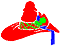 | Halloween Pumpkin Witch Hat | 60 | Shop (Halloween only · Halloween Pumpkin Witch Package 300 Durango Coins) |
| Techwear Hat | 60 | Shop (Techwear Package 200 Durango Coins) |